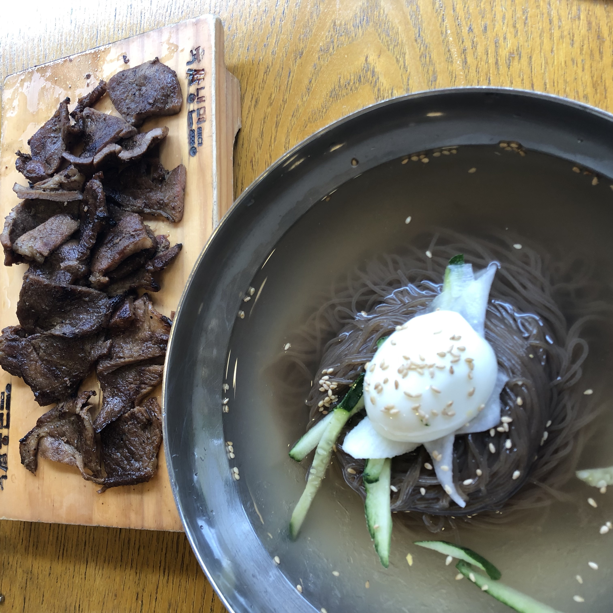

육쌈냉면

육쌈냉면은 고시촌에 위치한 냉면 전문점입니다.
이 식당의 특징은 냉면이 숯불고기와 같이 나온다는 점입니다.
냉면 뿐만 아니라 칼국수 등 동절기 메뉴도 있습니다.
사이드 메뉴로 찐만두도 있어서 같이 먹으면 매우 맛있습니다.
1000원을 더 내면 냉면 사이즈 업이 가능하고, 고기 추가는 3500원입니다.
매장 내에 따뜻한 육수가 구비되어 있습니다.
냉면을 좋아하시는 분이라면 한 번 쯤 꼭 가보셨으면 좋겠습니다.
주소 : 서울 관악구 신림로59길 15-13
고시촌 미식회 별점:★★★★
▲ 위 사진은 누르시면 더 다양한 메뉴를 보실 수 있으십니다.